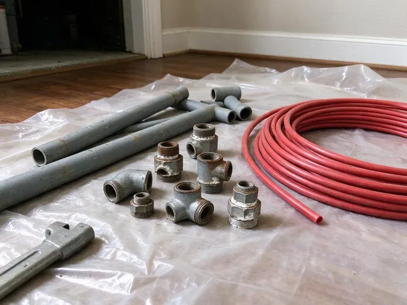

Sump Pump Replacement in Minnetonka, MN
A new sump pump from CNV Plumbing keeps water below the slab in Minnetonka, MN. Most swaps take one to two hours.
- Zoeller and Liberty Units
- Fast Pump Swaps
- Cast Iron Pumps
- Workmanship Guarantee
Sump Pump Installs Done Right in Minnetonka, MN.
A new pump and check valve, matched to your lift height, installed by our plumbers.
Replacing Sump Pumps in Minnetonka, MN Homes
CNV Plumbing handles sump pump replacement from the pit up, starting with the basin and ending with where the discharge line drops water in the yard. Water heaters and boilers run long hours through the heating season, which adds wear compared to milder climates. Basements and deep crawl spaces are where a good pump earns its keep. Test yours before the wet season.
Our expertise includes:
- Pump sizing based on lift height and inflow.
- Permit-Ready Installs
- Battery backup and high-water alarm setups

Additional Plumbing Replacement Services in Minnetonka, MN
When repairs are no longer enough, our replacement services in Minnetonka, MN deliver durable upgrades that restore full performance.


Customers
Why Choose CNV Plumbing for Sump Pump Replacement in Minnetonka, MN?
Choosing a plumber for a sump pump comes down to who will show up during a storm and who installs it right so that call never happens. Our goal is the second one. Cast iron pumps and new check valves are standard on our installs.
- Cast Iron Pumps, Cast iron housings run cooler than plastic, so the motor lasts longer.
- Fewer Repairs, Keeping water off the slab spares framing, flooring and the mechanicals stored downstairs.
- Right Size, We match pump capacity to pit volume and discharge height.
Citywide Coverage
We cover all of Minnetonka and the towns around it for sump pump work. Older neighborhoods with block basements and newer subdivisions with poured walls and plastic basins both keep us busy year round. Most calls get same-day service.
Experienced Team
Years of pulling failed pumps out of basements and commercial pits teach you where the real problems hide, and it is rarely the motor. Usually it is the check valve. Sometimes the discharge line is the culprit.
Safety-First Approach
Pumps sit in water next to concrete, so a cracked cord or a loose ground is a real shock risk for anyone reaching into the pit. The full length of the cord gets checked. Damaged cords get replaced along with the pump.
Trusted Certified Minnetonka Plumbing Services Professionals
At CNV Plumbing, we are proud to offer certified plumbing services throughout Minnetonka, MN. Credentials matter in this trade. Our plumbers hold recognized industry credentials, and they follow strict safety and quality rules on every repair, installation and maintenance call we run.
Call Us Now PHCC Plumbing Contractor Recognition
PHCC Plumbing Contractor Recognition Better Business Bureau (BBB) Accreditation
Better Business Bureau (BBB) Accreditation Angi Certified Pro
Angi Certified Pro ISO 9001 Quality Management Certification
ISO 9001 Quality Management CertificationSump Pump Types We Install in Minnetonka, MN
Sewage Ejector Pump Replacement in Minnetonka
Basement bathrooms below the sewer line drain into a sealed, vented basin, and the ejector pump in that basin has to pass 2-inch solids. That is not a sump pump job. We replace the ejector and its discharge check valve, reseal the lid gasket, and confirm the vent ties in. A bad seal shows up as sewer odor.

Battery Backup Sump Pump Systems in Minnetonka
Summer thunderstorms can drop intense rain in a short time, causing sewer backups in older neighborhoods. A primary pump on household current does nothing once the breaker panel goes dark. We add a 12-volt backup pump on its own float, mounted a few inches above the primary, with a deep-cycle battery and a charger that tests itself. It also covers a stuck primary switch. A high-water alarm lets you know the backup has taken over.
Pedestal Pumps for Shallow Pits in Minnetonka, MN
Older basements sometimes have a narrow, shallow pit poured right into the floor, and a pedestal pump is often the only thing that fits without breaking concrete. We replace the pump and float rod and rerun the PVC up to the check valve. Cheaper than a submersible, too.
Combination Sump Pump System Replacement in Minnetonka, MN
Combination units put a primary AC pump and a DC backup on one discharge manifold, so you get two pumps and two floats in a single assembly. They are handy when the basin is too small for two pumps side by side. We replace the whole assembly or just the failed side.
Cast Iron Submersible Pumps in Minnetonka
Cast iron sheds motor heat into the water around it far better than a plastic housing does, which is a big part of why a Zoeller M53 or Liberty 250 outlasts a hardware-store pump. Most swaps take one to two hours. We also check that the float has room to travel without touching the basin wall.
Float Switch and Check Valve Replacement in Minnetonka
Stuck floats and leaking check valves cause more sump failures than dead motors do. When the check valve leaks, the water in the pipe drops back into the basin and the pump has to move it twice, which shortens its life. New valve every time. In a tight pit we use a vertical switch, and in a wide pit a tethered float.
Choosing a Backup Battery in Minnetonka
Battery choice decides how long the backup actually runs. A sealed AGM or deep-cycle marine battery in the 75 to 100 amp-hour range will typically handle several hours of intermittent pumping during an outage. We size it to how often your pump runs on a wet day. Batteries need replacing every three to five years.

Yard Drainage Pit Pumps in Minnetonka, MN
Yard drainage pits and window well pumps can sit dry from fall to spring and then seize the first time a big storm fills them. We swap in a corrosion-resistant pump and clear out leaves and silt. Discharge goes away from the foundation. A bucket test every spring catches problems early.
Local Sump Pump Replacement in Minnetonka, MN
Search for a sump pump plumber near you in Minnetonka, MN, and you will find plenty of names, but fewer that stock the pump on the truck. Most of our trucks carry cast iron 1/3 and 1/2 HP pumps. That means a same-day swap in most cases.
Same-day replacement is normal for us. CNV Plumbing plumbers in Minnetonka keep common pump sizes stocked, along with check valves and rubber couplers, so a failed pump rarely means a second trip. Supply houses close at five. Our stock is built around that.
CNV Plumbing at a Glance
- Fully licensed plumbing team covering Minnetonka, MN
- 24/7 emergency service with same-day scheduling
- Upfront, flat-rate pricing before work begins
- 4.8-star rated by 501+ Minnesota customers
Minnetonka Map
Minnetonka Information
- Population
- 52,463
- Area codes
- 952/763/612
- Service area
- Minnetonka and towns within a 40 mile drive
- Nearby
- St. Louis Park, Edina, Eden Prairie, Plymouth
Summer thunderstorms can drop heavy rain in a short time, causing sewer backups in older neighborhoods. A working sump pump is what stands between a hard rain and a wet basement in many Minnetonka, MN homes.
Expert Services
Call CNV Plumbing for honest, reliable plumbing from people who know the trade in Minnetonka, MN.
Our Specialized Plumbing Services in Minnetonka, MN
At CNV Plumbing, we handle the full list of plumbing services across Minnetonka, MN. From leak detection to full system installs, our team works fast and charges fair prices on homes and commercial properties alike. Explore our core services below:


How a Sump Pump Replacement Goes in Minnetonka, MN
Here is how we replace and check your new pump.
Call Us
Call (612) 712-9569 and tell us about the pump and pit. We set a time and give you a price.
Check the Pit
We look at pit size, the discharge line and the outlet. Then we pick a pump and switch that fit.
Install and Test
The new pump and check valve go in, and we fill the pit to test it. We confirm the discharge and that the alarm sounds.
Frequently Asked Questions About Sump Pump Replacement in Minnetonka
Expect $500 to $1,500 for the pump and labor. Cutting in a new pit or rerouting the discharge line can add several hundred dollars to the total. The quote comes after we look at the pit.
The primary pump runs on household current and does the daily work. The backup, battery or water powered, sits a few inches higher and only runs if the primary fails, loses power or cannot keep up with a heavy inflow. It is cheap insurance.
Three to five years from most manufacturers. Our labor warranty covers the install.
Zoeller, Liberty Pumps, Wayne and Little Giant cover most of what we put in. For a primary pump we usually recommend cast iron. If you have a brand preference, we can work with it, as long as the pump is rated for your lift height and pit size.
A pump that hums without moving water, rattles, runs nonstop or shows rust on the housing is near the end. Age matters too. Past 7 to 10 years, most pumps are living on borrowed time, even if they still start when you pour a bucket into the pit.
A battery backup is a second pump, usually 12-volt, that sits slightly above the primary on its own float and runs off a deep-cycle battery. If the main pump dies or the power drops, it takes over. The charger keeps it ready between storms.
Every three months, and right before the wet season. Pour a bucket of water in until the float rises. You want it to kick on, drop the water to the off point and shut down cleanly, with no hum or rattle.
Constant running, loud grinding, short cycling or failure to start. Rust and a burning smell are also bad signs.
What Our Customers Say About Our Plumbing Experts

Marcus H.
Grease from the fryer line kept clogging the kitchen drain at my diner. CNV Plumbing hydro jetted the line after closing, showed me the buildup on camera, and set us up on a quarterly cleaning so it does not catch us on a Friday again.
Drain Cleaning · Edina, MN
Brian W.
I smelled gas behind the dryer and called right away. The plumber found a corroded flex connector, replaced it, and pressure tested the whole line before turning the gas back on. He let me watch the gauge hold steady for fifteen minutes.
Gas Line Repair · Bloomington, MNPaul B.
Our pit pump ran nonstop even in dry weather. The plumber found the check valve was stuck open, so the same water kept cycling back into the pit. New valve, new float switch, done in an hour. It runs quiet now.
Sump Pump · Bloomington, MN
Monica A.
Our water bill nearly doubled in one month with no change in how we used water. The tech checked the meter, heard the leak under the hallway with his equipment, and opened a hole about a foot square. Fixed the same day.
Slab Leak Repair · Minneapolis, MN
Emily R.
The shutoff valve under our kitchen sink snapped off in my hand on a Sunday morning. CNV Plumbing had someone out by early afternoon. He replaced both angle stops with quarter turn valves and showed me where our main shutoff was, which I honestly did not know.
Plumbing Repair · Plymouth, MNSofia M.
Two new toilets went in during one visit. The tech set them on new wax rings and swapped the old supply lines. He also noticed our bathroom faucet dripping and replaced the cartridge while he was there. No mess left behind.
Toilet Installation · St. Louis Park, MN